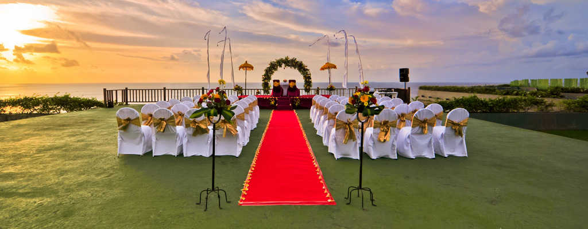

<!-- BEGIN .single-content -->
<div class="single-content">
  <div class="shortcode-content">
    
    <script type="text/javascript" src="https://maps.googleapis.com/maps/api/js?sensor=false&amp;language=en"></script>

    <div class="paragraph-row">
      <div class="column5">
        <h3>The Wedding Venue</h3>
        <p><a href="images/slider-klapa11.jpg" class="lightbox-photo"></a></p>
        <p>Our honored guests are invited to participate in Brandon &amp; Jane's wedding located South of Bali, at Klapa New Kuta Beach. New Kuta Beach sits gorgeously on 3.5 hectares of Bukit Pecatu and features a Garden on the Cliff, designed to worship the breathtaking view of Indian Ocean.</p>
        <hr/>
        <ul>
          <li class="styled"><i class="fa fa-map-marker"></i><b class="list-b">Venue:</b>Klapa Resort</li>
          <li class="styled"><i class="fa fa-clock-o"></i><b class="list-b">Time/Date:</b>Dec 14 15, 08:50</li>
          <li class="styled"><i class="fa fa-location-arrow"></i><b class="list-b">Address:</b>Jl. New Kuta Beach Pecatu Indah Resort, Kuta Selatan, Badung, Bali 80361</li>
          <li class="styled"><i class="fa fa-phone"></i><b class="list-b">Phone:</b>(0361) 8484581</li>
          <li class="styled"><i class="fa fa-globe"></i><b class="list-b">Website:</b><a href="http://klapa-newkutabeach.com/" target="_blank">http://klapa-newkutabeach.com/</a></li>
        </ul>
      </div>
      <div class="column7">

        <div class="paragraph-row">
          <div class="column12">
            <div class="maps">
              <div id="map_canvas" style="height: 600px; width: auto;"></div>
              <script type="text/javascript">
                var mapOptions = {disableDefaultUI: false, zoom: 16, center: new google.maps.LatLng(-8.7998977, 115.1198094), mapTypeId: google.maps.MapTypeId.ROADMAP};
                var map = new google.maps.Map(document.getElementById('map_canvas'), mapOptions);
                var myMarker1 = new google.maps.Marker({position: new google.maps.LatLng(-8.7998977, 115.1198094), map: map, icon: 'images/pin-red.png' });
              </script>
            </div>
          </div>
          <!-- <div class="column7">
            <p><a href="images/photos/image-12.jpg" class="lightbox-photo"></a></p>
          </div> -->
        </div>

      </div>
    </div>

    <hr/>

  </div>
<!-- END .single-content -->
</div>
    


